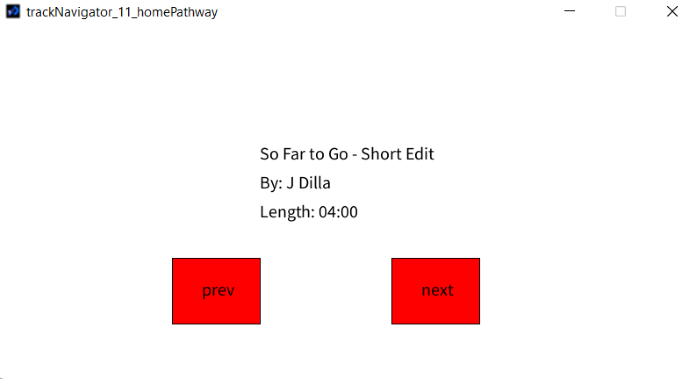

University Student
Duwa Khan 210044641@aston.ac.uk
SUN: 210044641
In this project, I built a user interface which scrolls through a sequence of music tracks. If you click the "Next" button, the next track will be displayed.If you click the “Prev” button the previous track will be displayed. And the user should not be able to click past the last track or before the first track. I used Processing, for an easier object-orientated approach and learnt how to use Java ArrayLists and String function, through this portfolio project.
In this project, I started from a simple graphical application drawing circles, ellipses and rectangles, and implemented the given code with a Shape superclass to avoid repetiton and used method overriding to create a FilledRectangle class with minimal effort, and also used composition to create a Frame class, combining two Rectangles. With this project, I was able to learn how to use Javadoc comments to produce documentation for my code and inheritance.
In this project, I used HTML, CSS and JavaScript to build a website promoting a Fitness Gym, it includes 2 pages, a Sign-up page accessible through the "Sign up Now!" button which, includes a form and the home page consisting of reviews and attributes of the gym.